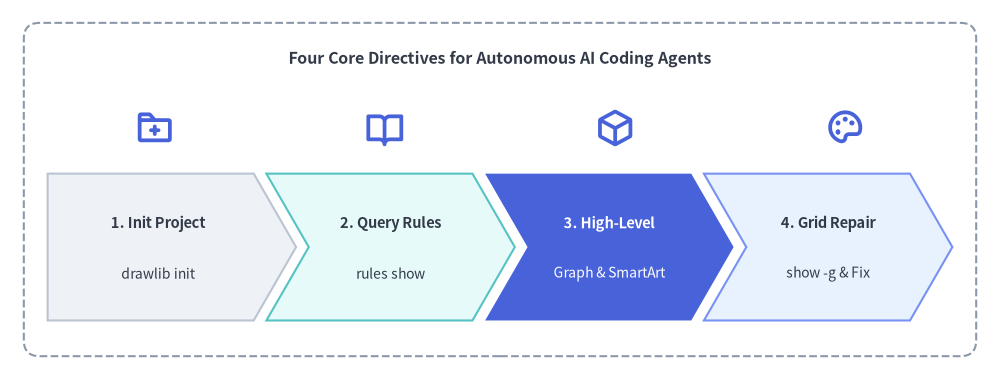
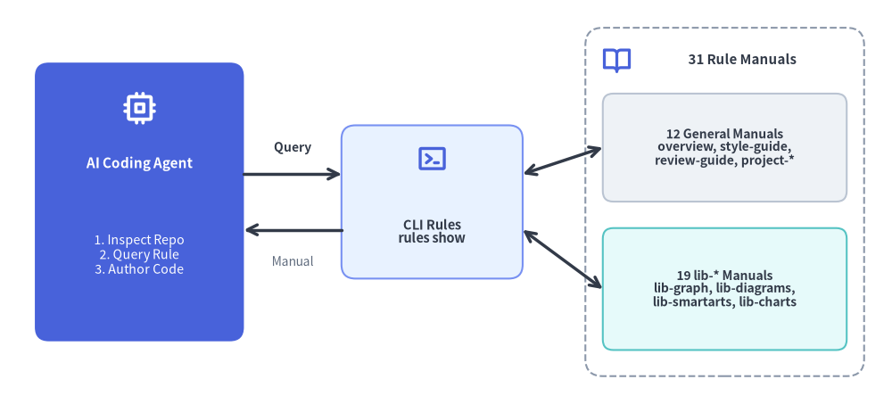

AI Agent Instructions & Prompt Engineering
Drawlib was built from the ground up for the era of AI-assisted engineering. Instead of asking Large Language Models (LLMs) to construct thousands of lines of fragile SVG path strings or brittle Matplotlib code, Drawlib gives AI agents a clean, high-level, declarative Python vocabulary designed for zero-shot architectural visualization.

Source Code
from drawlib.canvas import save, setup
from drawlib.icons import phosphor
from drawlib.shapes import rectangle
from drawlib.smartarts import ChevronProcess
from drawlib.styles import Styles
from drawlib.text import text
setup(width=126, height=48)
rectangle((63, 24), width=120, height=42, style=Styles.MutedDashed.patch(shape_r=2.0))
text((63, 40.5), "Four Core Directives for Autonomous AI Coding Agents", style=Styles.DarkBold.patch(text_size=11.5))
# Stage Icons above ChevronProcess
icons = [
(19.5, phosphor.folder_plus),
(48.5, phosphor.book_open),
(77.5, phosphor.cube),
(106.5, phosphor.palette),
]
for ix, icon_fn in icons:
icon_fn((ix, 31.8), width=5.0, style=Styles.PrimaryBold)
workflow = ChevronProcess(
style=Styles.Neutral,
text_style=Styles.DarkBold.patch(text_size=10.5),
description_style=Styles.Dark.patch(text_size=10.0),
corner_angle=60.0,
spacing=1.6,
flat_left_end=True,
)
workflow.add("1. Init Project", description="drawlib init")
workflow.add("2. Query Rules", description="rules show", style=Styles.SecondaryNeutral)
workflow.add(
"3. High-Level",
description="Graph & SmartArt",
style=Styles.PrimaryFlat,
text_style=Styles.WhiteBold.patch(text_size=10.5),
description_style=Styles.White.patch(text_size=10.0),
)
workflow.add("4. Grid Repair", description="show -g & Fix", style=Styles.PrimaryNeutral)
workflow.draw(xy=(6, 7.5), width=114, height=18.5)
save()
1. Why Drawlib is Ideal for AI Agents
- Deterministic Geometry: Unlike heuristic layout engines (e.g. Graphviz, PlantUML) that scramble diagrams unexpectedly when a label changes, Drawlib uses a predictable Cartesian coordinate system where
(0, 0)is anchored at the bottom-left. - High-Level Domain Abstractions: AI agents can instantiate enterprise architecture topologies, UML class models, and data charts in fewer than 20 lines of Python.
- On-Demand Knowledge Retrieval: Drawlib includes a built-in terminal rules catalog (
drawlib rules show <topic>). Agents can fetch targeted API specifications on demand without consuming valuable context window space with massive upfront manuals.
2. Recommended Agent Instruction Template
Copy and paste the following snippet into your repository's AI instruction file (e.g. .cursorrules, .agents/rules/drawlib.md, or Claude/Gemini system prompts):
# Drawlib Agent Directives
Drawlib is a pure-Python library for "Illustration as Code" and "Illustrated Documentation as Code".
When tasked with creating diagrams, architectures, flowcharts, or charts, follow these rules:
1. Project-First Rule (`drawlib init` — No Bare `.py` Files):
Never create standalone `.py` drawing files in an uninitialized directory. If a `*_src/` project does not exist, scaffold one first so `styles.py`, `utils.py`, `_assets/`, and `build.sh` are configured:
- Diagram image(s) only: `uv run drawlib init images [-l <lang>] [-s <style>]` (author in `images_src/*.py`)
- Linear spec / RFC / PDF: `uv run drawlib init doc [-l <lang>] [-s <style>]` (author in `doc_src/*.md`)
- Multi-page website: `uv run drawlib init site [-l <lang>] [-s <style>]` (author in `docs_src/**/*.md`)
- 16:9 slide deck: `uv run drawlib init slide [-l <lang>] [-s <style>]` (author in `slide_src/*.md`)
- Pass `--lang ja` (or target language code) for non-English labels, and delete starter `sample*.py` files.
2. High-Level Over Low-Level:
Always favor high-level components over assembling raw rectangles and lines:
- Auto-Layout Graphs: `drawlib.graph` (ArchitectureGraph, LayerGraph, TreeGraph, RadialGraph, GridGraph)
- Cloud Topologies: `drawlib.diagrams.architecture.ArchitectureDiagram`
- Flowcharts & Swimlanes: `drawlib.diagrams.flow.FlowDiagram`
- API Sequences: `drawlib.diagrams.sequence.SequenceDiagram`
- UML Class Hierarchies: `drawlib.diagrams.class_diagram.ClassDiagram`
- Relational Database Schemas: `drawlib.diagrams.er.ERDiagram`
- State Machines: `drawlib.diagrams.state.StateDiagram`
- Pipelines, Trees & Tables: `drawlib.smartarts` (ChevronProcess, TreeNode, MindMapNode, Table)
- Quantitative Charts: `drawlib.charts` (BarChart, LineChart, AreaChart, PieChart, RadarChart, ScatterChart, GanttChart, GeoMapChart)
3. Coordinate System & Style Discipline:
- `(0, 0)` is the BOTTOM-LEFT corner of the canvas (X increases rightward, Y increases upward).
- Always import PascalCase tokens: `from drawlib.styles import Colors, Styles`.
- Ground at least 50% of nodes in calm neutral styles (`Styles.Neutral`, `Styles.PrimaryNeutral`, `Styles.SecondaryNeutral`) and reserve saturated fills (`Styles.PrimaryFlat`, `Styles.AccentFlat`) for 1–2 focal points.
4. The 3-Stage Multimodal Self-Correction Loop:
- Always include an explicit `file:<name>.png` and `caption:"..."` on every embedded ```drawlib block, place a Top Hero at Lines 5–15 with `fold-code`, omit narrow `px` width caps, and keep `text_size >= 10.0`.
- Render headlessly with the coordinate grid (`-g`):
`uv run drawlib show docs_src/page.md <name>.png -g -o .drawlib/scratch/preview.png`
- Visually inspect `.drawlib/scratch/preview.png` for text clipping, overlapping labels, or cramped margins, and verify the built HTML page in a `1280×920` headless browser viewport.
5. Fetch Rules on Demand:
Run `uv run drawlib rules show <topic>` (e.g. `overview`, `style-guide`, `review-guide`, `project-overview`, `project-site`, `lib-graph`, `lib-diagrams`, `lib-charts`, `lib-smartarts`, `anim-guide`).
3. Dynamic Knowledge Retrieval (drawlib rules)
Instead of pasting entire documentation manuals into prompts, train your agent to query drawlib rules on demand. Drawlib ships with 31 modular rule manuals (12 general guidelines + 19 library module specifications):

Source Code
from drawlib.canvas import save, setup
from drawlib.icons import phosphor
from drawlib.lines import line
from drawlib.shapes import rectangle
from drawlib.styles import Styles
from drawlib.text import text
setup(width=128, height=58)
# Left: AI Coding Agent
rectangle((20, 29), width=30, height=40, style=Styles.PrimaryFlat.patch(shape_r=2.0))
phosphor.cpu((20, 42.5), width=5.0, style=Styles.WhiteBold)
text((20, 34.5), "AI Coding Agent", style=Styles.WhiteBold.patch(text_size=11.0))
text((20, 21.5), "1. Inspect Repo\n2. Query Rule\n3. Author Code", style=Styles.White.patch(text_size=10.2))
# Center: On-Demand CLI Dispatcher
rectangle((62, 29), width=26, height=22, style=Styles.PrimaryNeutral.patch(shape_r=2.0))
phosphor.terminal_window((62, 35.2), width=4.6, style=Styles.PrimaryBold)
text((62, 24.8), "CLI Rules\nrules show", style=Styles.DarkBold.patch(text_size=10.5))
# Right: 31 Modular Manuals Container
rectangle((104, 29), width=40, height=50, style=Styles.MutedDashed.patch(shape_r=2.5))
phosphor.book_open((88.5, 49.5), width=4.4, style=Styles.PrimaryBold)
text((106.5, 49.5), "31 Rule Manuals", style=Styles.DarkBold.patch(text_size=10.8))
rectangle(
(104, 36.8),
width=35,
height=15.5,
style=Styles.Neutral.patch(shape_r=1.5),
text="12 General Manuals\noverview, style-guide,\nreview-guide, project-*",
text_style=Styles.DarkBold.patch(text_size=10.0),
)
rectangle(
(104, 16.5),
width=35,
height=17.5,
style=Styles.SecondaryNeutral.patch(shape_r=1.5),
text="19 lib-* Manuals\nlib-graph, lib-diagrams,\nlib-smartarts, lib-charts",
text_style=Styles.DarkBold.patch(text_size=10.0),
)
# Connectors
line((35, 33), (49, 33), arrow_head="->", style=Styles.DarkBold)
text((42, 36.8), "Query", style=Styles.DarkBold.patch(text_size=10.0))
line((49, 25), (35, 25), arrow_head="->", style=Styles.DarkBold)
text((42, 20.5), "Manual", style=Styles.Muted.patch(text_size=10.0))
line((75, 33), (86.5, 36.8), arrow_head="<->", style=Styles.DarkBold)
line((75, 25), (86.5, 16.5), arrow_head="<->", style=Styles.DarkBold)
save()
# List all 31 modular rule topics and cache status:
uv run drawlib rules list
# Retrieve targeted manuals:
uv run drawlib rules show agent-instruction # Workflow loop & bootstrap rules
uv run drawlib rules show overview # Cartesian geometry & canvas lifecycle
uv run drawlib rules show style-guide # 6-color semantic system & 50%+ neutral baseline
uv run drawlib rules show review-guide # 3-stage multimodal review loop & 720pt font math
uv run drawlib rules show anim-guide # Animation loop idioms & component patterns
uv run drawlib rules show project-overview # 4 project archetypes & decision matrix
uv run drawlib rules show project-images # Standalone images project (images_src/*.py)
uv run drawlib rules show project-doc # Linear document & PDF project (doc_src/*.md)
uv run drawlib rules show project-site # Multi-page documentation website (docs_src/**/*.md)
uv run drawlib rules show project-slide # 1920x1080 slide stage authoring & templates (slide_src/*.md)
uv run drawlib rules show api # Complete API index & symbol cheat sheet
3.1 Complete drawlib rules Topic Catalog
General Guidelines (12 Topics):
| Topic Name | Primary Scope |
|---|---|
agent-instruction |
AI agent bootstrap instructions, project-first rule, and multimodal workflow loop. |
overview |
Canvas lifecycle (setup, clear, save), bottom-left (0, 0) coordinates, and core imports. |
style-guide |
Visual hierarchy, 50%+ neutral baseline rule, 6 semantic colors, and typography sizing. |
review-guide |
Autonomous 3-stage multimodal review loop, 720pt typography scaling, and coordinate anchor table. |
anim-guide |
Animation loop idioms (Re-Draw vs. Mutate) across primitives, SmartArts, charts, diagrams, and graphs. |
project-overview |
Architecture of the 4 project archetypes (images, doc, site, slide), shared files, and cache. |
project-images |
Standalone images project (images_src/*.py -> images/*.png), save() redirection, and grid review. |
project-doc |
Linear technical document & PDF project (doc_src/*.md), 00_cover.md, --toc, and page-break sizing. |
project-site |
Multi-page website (docs_src/**/*.md), navbar.md syntax, Top Hero rule, and drawlib serve --check. |
project-slide |
16:9 slide stage (1920x1080), ::: block / ::: note syntax, layout templates, and Presenter View. |
cli |
Complete CLI command, flag, and exit code reference manual. |
api |
Comprehensive API index and symbol signature cheat sheet across all drawlib.* modules. |
Library Module Manuals (19 lib-* Topics):
| Topic Name | Target Module | Primary Scope |
|---|---|---|
lib-canvas |
drawlib.canvas |
setup(), clear(), save(), show(), get_dimage(), grid & background styling. |
lib-anim |
drawlib.anim |
Animation(fps), add(), save() (APNG & Animated WebP), fps / frame_rate. |
lib-shapes |
drawlib.shapes |
23 geometric primitives (rectangle, circle, arrow, arrow_l, arrow_u, cylinder, etc.). |
lib-lines |
drawlib.lines |
line(), lines(), line_curved(), lines_curved(), line_arc(), Bezier curves, arrowheads. |
lib-text |
drawlib.text |
text(), text_vertical(), alignment (halign, valign), rotation, and font sizing helpers. |
lib-preset-colors |
drawlib.preset_colors |
DefaultColors, GoogleColors, MonochromeColors, CssColors, RGB/RGBA tuples. |
lib-styles |
drawlib.styles |
Styles and Colors dynamic facade and styles.py / utils.py injection architecture. |
lib-preset-styles |
drawlib.preset_styles |
10 orthogonal style modifiers (Flat, Neutral, Outline, Dashed, etc.) across 6 themes. |
lib-fonts |
drawlib.fonts |
Font, FontRoboto, FontMonoSpace, FontSourceCode, CJK/regional families, FontFile. |
lib-images |
drawlib.images |
image(), Dimage manipulation (trim, fill, alpha, resize), get_dimage_from_code(). |
lib-icons |
drawlib.icons |
phosphor (1,512 vector icons), fontawesome (5 brands), and gcp (212 official cloud icons). |
lib-math |
drawlib.math |
Distance, angle, bounding box, linear/polyline path interpolation, rotation, orthogonal routing. |
lib-types |
drawlib.types |
Style, Color, FontBase, alignment and line-style literal types, .patch() immutability. |
lib-smartarts |
drawlib.smartarts |
ChevronProcess, Cycle, GridLayout, Pyramid, BoxList, BulletPoints, TreeNode, MindMapNode, Table, SourceCode. |
lib-charts |
drawlib.charts |
BarChart, LineChart, AreaChart, PieChart, RadarChart, ScatterChart, GanttChart, GeoMapChart. |
lib-diagrams |
drawlib.diagrams |
ArchitectureDiagram, FlowDiagram, SequenceDiagram, ClassDiagram, ERDiagram, StateDiagram. |
lib-graph |
drawlib.graph |
ArchitectureGraph, LayerGraph, TreeGraph, RadialGraph, GridGraph, calc(), export_code(). |
lib-tools |
drawlib.tools |
Programmatic Python API for build_*, export_code_block, init_project, serve_docs, list_cache. |
lib-slide |
drawlib.slide |
current_slide, SlideContext, BoundingBox, and build_slide(). |
4. Prompting Best Practices
When asking an AI agent to generate a diagram:
- Provide Real Code Context: Reference actual source files (e.g., "Inspect
src/services/order.pyand draw anArchitectureDiagramshowing its upstream and downstream dependencies"). - Specify Project or Target Document: Indicate whether the diagram belongs in a Markdown page (
docs_src/architecture.md) or a standaloneimages_src/script. - Ask for Multimodal Verification: Remind the agent to render with
-ginto.drawlib/scratch/and visually inspect the output image before finalizing.